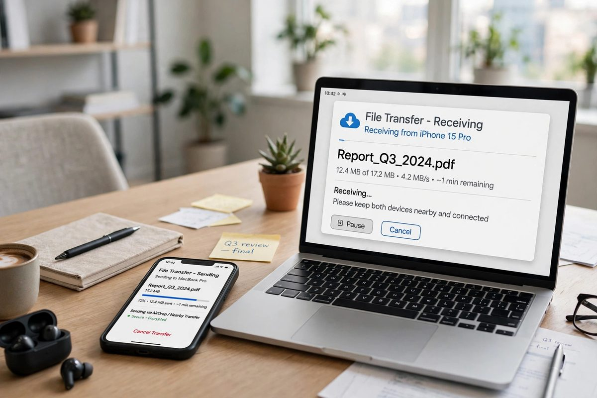

Home > Guides > How to Share Files from Phone to PC Quickly
How to Share Files from Phone to PC Quickly
A practical guide from PairDrop.

Moving files from a phone to a PC used to mean hunting for a cable, installing drivers and waiting for a slow sync. Today there are several reliable methods, and the best one depends on what you are moving, how large it is and whether you have Wi-Fi nearby. A single photo can go in seconds, while a long video needs a method that will not compress it or stop halfway. This guide compares the practical options, explains when each one works best, and shows a simple step-by-step workflow you can repeat every time. By the end you will know how to pick the right method in under a minute and avoid the common mistakes that cause failed transfers, missing files and poor quality copies.
Start with the simplest method that fits the file
For one or two photos, a messaging app or email is often enough, but it is a poor choice for original quality. Many chat apps compress images and videos, so the copy on your PC will look worse than the original. For documents, a cloud drive or a direct local transfer keeps the file intact. If you only need to view a file once, a quick share link is fine. If you need the original for editing, printing or archiving, choose a method that promises no compression. Think about size first: files under 25 MB are easy almost anywhere, while files over 1 GB need Wi-Fi, a cable or a local hotspot. Choosing by size saves you from starting a transfer that fails at 90 percent.
Use Wi-Fi transfer when both devices share a network
When your phone and PC are on the same Wi-Fi network, a local transfer is usually the fastest wireless option. Open the sharing tool on your phone, select the files, and send them to the computer name that appears. Keep both devices awake and on the same network, and do not switch networks halfway through. If the PC does not appear, check that both devices are connected to the same band, that discovery is turned on, and that no VPN is splitting the connection. A VPN can make two devices on the same router look as if they are in different places. Turn it off for the transfer, then turn it back on. Large videos transfer much faster this way than over mobile data, and you use no data allowance at all.
Use a cable when speed and reliability matter most
A USB cable is still the most reliable way to move a large batch of files. Connect the phone, unlock it, and choose file transfer mode when prompted. On the computer, open the phone as a drive and copy the folders you need. Cables avoid Wi-Fi dropouts, keep original quality and work even with no internet. The main problems are a worn cable, a dirty port or the wrong transfer mode. If the phone only charges, pull down the notification and change the USB mode to file transfer. Copy in smaller batches for very large folders so that one error does not stop everything, and check the file count after copying before you delete anything from the phone.
Check the files before you delete the originals
A transfer is not finished when the progress bar disappears. Open a few files on the PC, check that photos open at full size, that videos play to the end, and that documents open without an error. Compare the number of files and the total size with the original folder. If a video stops early or a photo looks small, transfer that file again with a different method. Only delete files from your phone after you have a verified copy and, for anything important, a second copy somewhere else, such as an external drive or a cloud backup. This one habit prevents the most painful kind of loss: deleting the only good copy of a memory or a work file.
Quick tips
- Pick the method by file size, not by habit
- Keep originals until the copy is verified
- Turn off the VPN during a local transfer
- Copy large folders in smaller batches
Frequently asked questions
How long does phone to PC transfer take?
A few photos take seconds over Wi-Fi. A 1 GB video usually takes one to three minutes over a good local Wi-Fi connection and under a minute over a fast USB cable. Slow transfers usually mean a weak Wi-Fi signal or a low-quality cable.
Will sharing compress my photos?
Some chat apps and email services do compress images and videos. Local Wi-Fi transfer, a USB cable and cloud drives set to original quality keep the file unchanged. Always check the file size after transfer if quality matters.
Why does my PC not see my phone?
The usual causes are the wrong USB mode, a charge-only cable, a locked phone or different Wi-Fi networks. Unlock the phone, set USB to file transfer, try another cable, and make sure both devices share the same network.